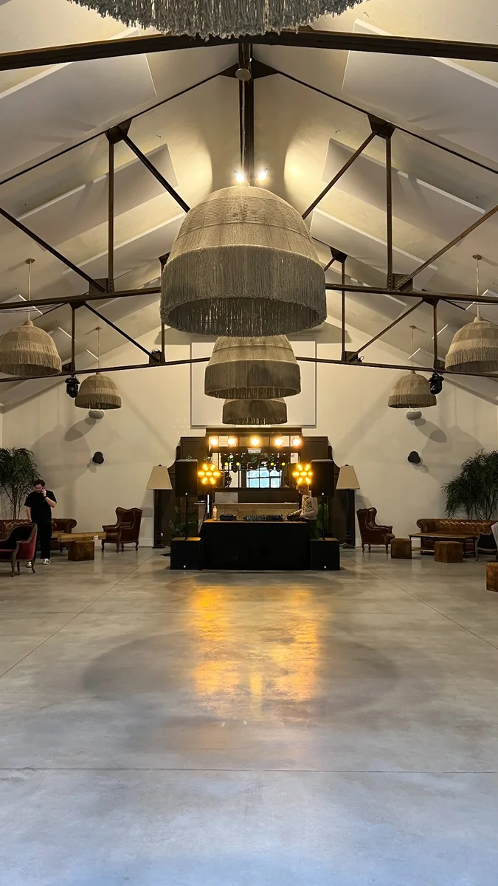
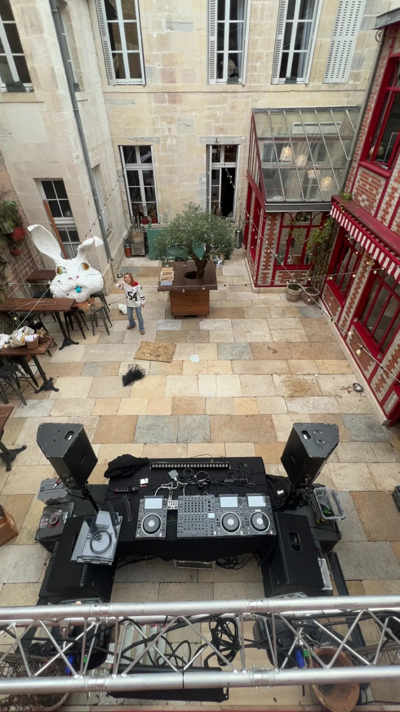
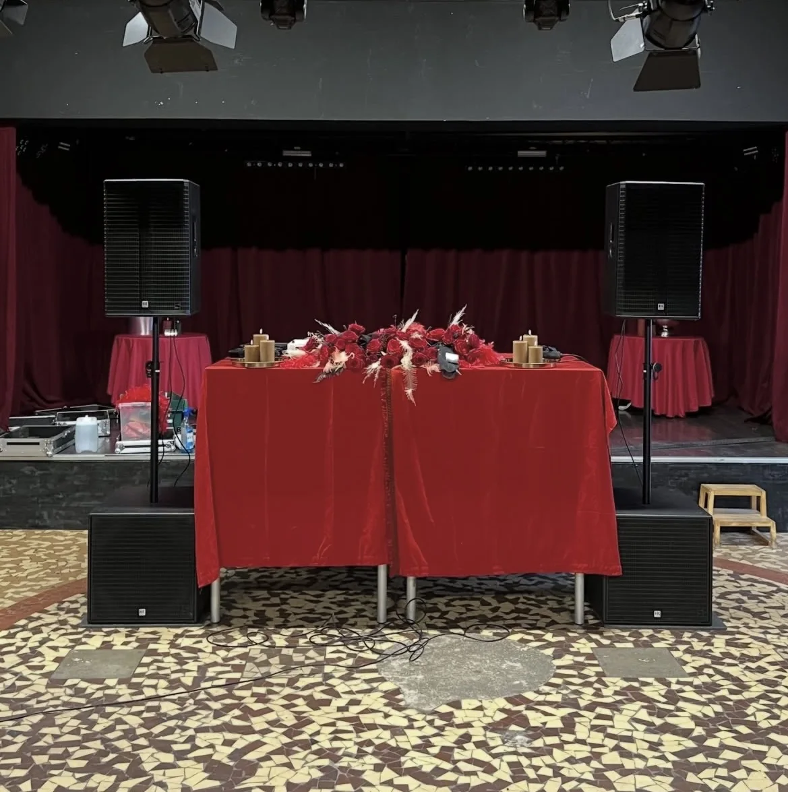
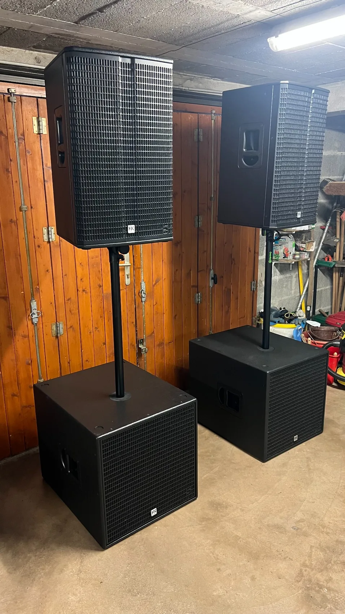
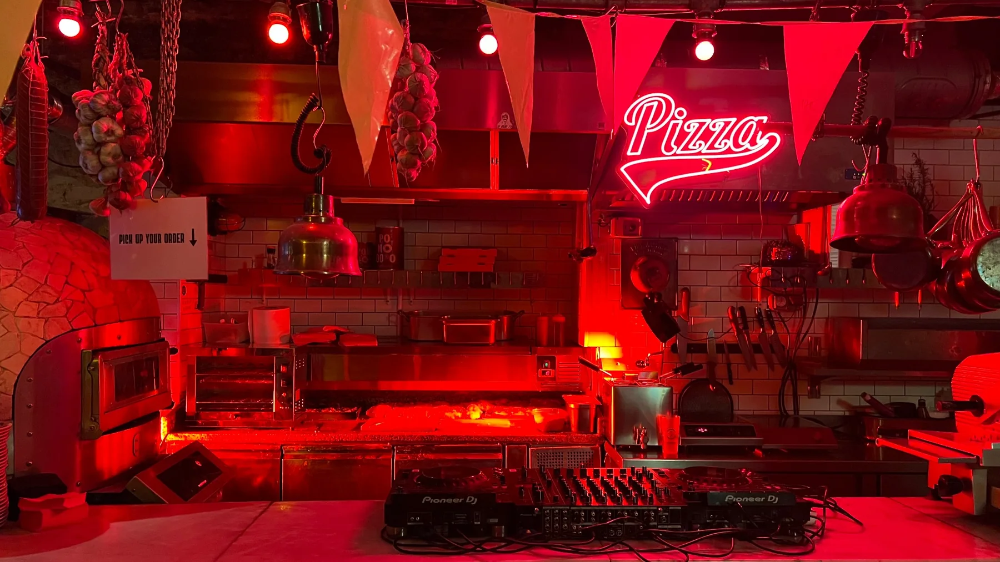
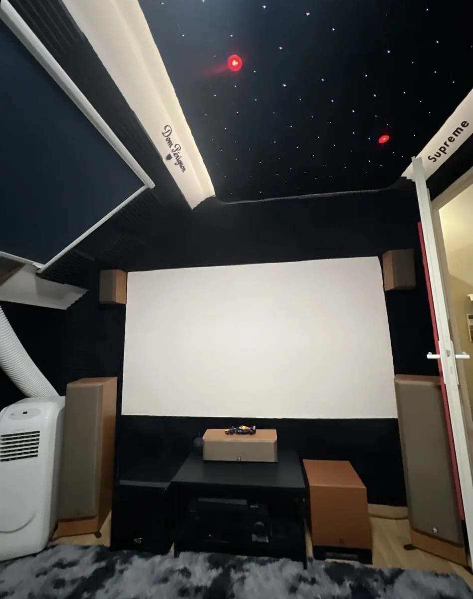

Salle premium
Pulse
Pulse équipe et prépare des événements avec des solutions son et lumière adaptées au lieu, au public et à l’ambiance recherchée.

Ce que Pulse couvre
Pulse ne mélange pas les activités : ce pôle concerne exclusivement la location de matériel, la sonorisation, l’éclairage, l’installation et la préparation technique d’événements.
Enceintes, caissons, configurations DJ et systèmes adaptés au format de l’événement.
Installation, câblage, réglage, placement du système et préparation avant l’arrivée du public.
Jeux de lumière, barres LED, lyres, effets d’ambiance et mise en valeur du lieu.
Implantation du matériel, sécurité du câblage, tests, rendu propre et suivi selon le besoin.
Lumière en situation
La lumière donne le ton de la soirée. Pulse travaille l’ambiance en fonction du lieu : rendu chaleureux, effet club, mise en scène d’un DJ set ou simple éclairage d’accompagnement.
Preuves Pulse






Événements
Pulse